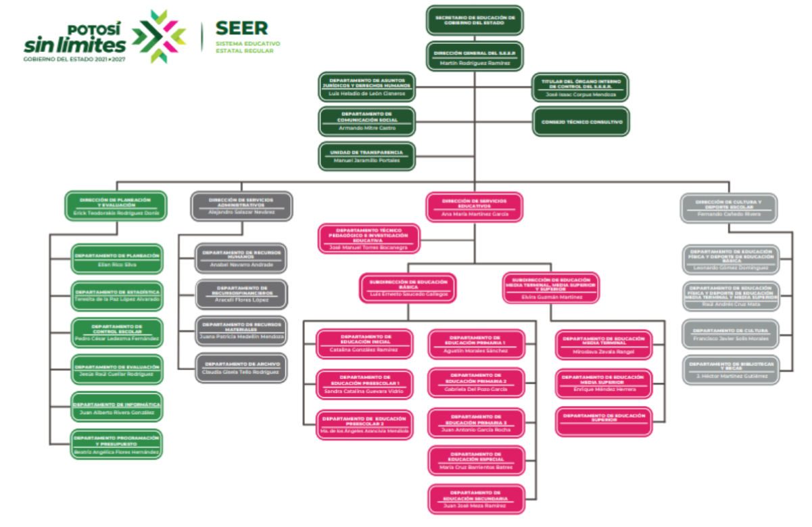
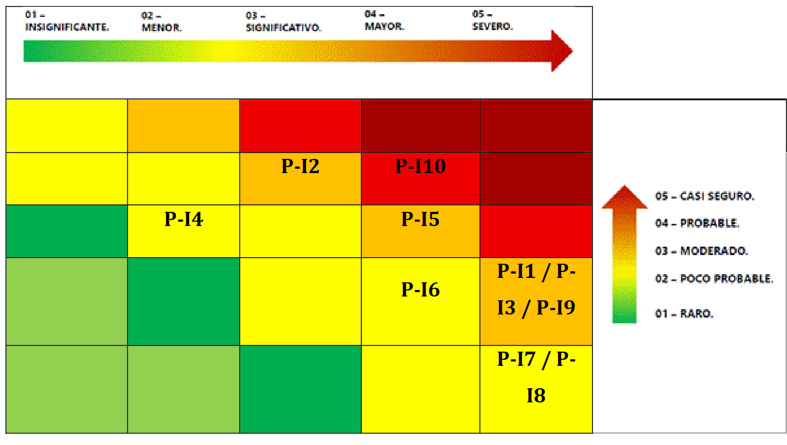
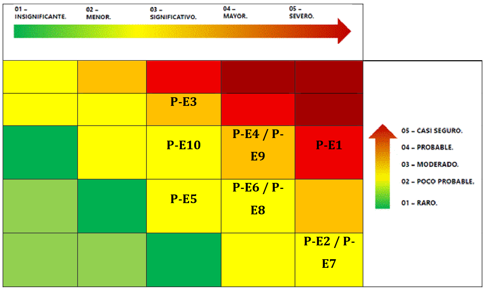

Implementacion ISO/IEC 27001:2022 en el SEER
Este proyecto presenta la implementacion de un Sistema de Gestion de Seguridad de la Informacion (SGSI) basado en la norma ISO/IEC 27001:2022 para el Sistema Educativo Estatal Regular (SEER), enfocandose principalmente en el Departamento de Recursos Humanos.
El SEER administra informacion sensible relacionada con docentes, alumnos y personal administrativo, por lo que resulta necesario establecer controles que protejan la confidencialidad, integridad y disponibilidad de los datos institucionales.
Integrantes: Aguilar Carrizales Miguel Angel, Aznar Cuevas Luis Eduardo, Beltran Reyna David, Gomez Arreguin Donaldo Demian, Morales Hernandez Roberto Emiliano y Rosales Ramirez Josue Emiliano.
Materia: CNO V: Seguridad Informatica. Profesor: Lopez, Servando. Grupo: T46A.
La ISO/IEC 27001:2022 es una norma internacional enfocada en la implementacion de Sistemas de Gestion de Seguridad de la Informacion. Su objetivo principal es proteger la informacion mediante controles orientados a la confidencialidad, integridad y disponibilidad.
Es importante porque permite a las organizaciones reducir riesgos de ciberseguridad, proteger datos sensibles, establecer politicas de seguridad, gestionar incidentes, mejorar la continuidad operativa y cumplir requisitos normativos.
El Sistema Educativo Estatal Regular (SEER) en San Luis Potosi es una dependencia gubernamental encargada de gestionar, supervisar y elevar la calidad academica y administrativa de instituciones de educacion basica y media superior en el estado.
El SEER maneja un alto volumen de informacion sensible correspondiente a docentes, alumnos y personal administrativo. Su mision es participar en la conduccion de politicas educativas orientadas a elevar la calidad academica y administrativa de los servicios que ofrece.
Imagen 1.1. Organigrama SEER

El SGSI se aplica de manera especifica al Departamento de Recursos Humanos, unidad administrativa dependiente de la Direccion de Servicios Administrativos del SEER.
La implementacion del SGSI busca establecer, implementar, mantener y mejorar continuamente un marco de seguridad que garantice la proteccion de los activos de informacion, mitigando riesgos mediante la preservacion de la triada CIA: confidencialidad, integridad y disponibilidad.
| Norma | Aplicacion dentro del SGSI |
|---|---|
| ISO/IEC 27001:2022 | Norma base certificable para establecer requisitos formales del SGSI, delimitar el alcance y definir mejora continua. |
| ISO/IEC 27002:2022 | Catalogo de controles de seguridad preventivos, detectivos y correctivos. |
| ISO/IEC 27005:2018 | Metodologia para identificar, evaluar y tratar riesgos del Departamento de Recursos Humanos. |
| ISO/IEC 27017:2015 | Controles aplicados al uso seguro de Microsoft Office 365 y OneDrive. |
| ISO/IEC 27018:2019 | Proteccion de datos personales en servicios de nube publica. |
Para los fines de este documento y de acuerdo con la norma ISO/IEC 27001:2022, se aplican los terminos definidos en la norma ISO/IEC 27000.
Se ha ampliado y clasificado un inventario de 40 activos criticos relacionados con el proceso de Recursos Humanos. La clasificacion considera el tipo de activo, si es interno o externo, la triada CIA y la justificacion del riesgo.
| ID / Activo | Tipo / Propietario | Triada CIA | Justificacion del riesgo |
|---|---|---|---|
| ACT-01 | Escuelas del S.E.E.R (Int) | C-Baja, I-Baja, D-Alta | Disponibilidad de servicios educativos. |
| ACT-02 | Computadoras en salones (Int) | C-Media, I-Media, D-Alta | Punto de acceso a red y malware. |
| ACT-03 | Servidores escuela (Int) | C-Alta, I-Alta, D-Alta | Fuga de PII de alumnos y maestros. |
| ACT-04 | Impresoras empresariales (Int) | C-Media, I-Baja, D-Media | Fuga de informacion impresa. |
| ACT-05 | Gestor base de datos (Int) | C-Alta, I-Alta, D-Alta | Corrupcion de registros academicos. |
| ACT-06 | Datos alumnos/maestros (Int) | C-Alta, I-Alta, D-Media | Robo de identidad y privacidad. |
| ACT-07 | Licencia Windows (Int) | C-Baja, I-Baja, D-Media | Vulnerabilidades sin parches. |
| ACT-08 | Empleados administrativos (Int) | C-Alta, I-Alta, D-Media | Vector de ingenieria social. |
| ACT-09 | Software computadoras clase (Int) | C-Baja, I-Media, D-Media | Inestabilidad del sistema escolar. |
| ACT-10 | Libros escolares (Int) | C-Baja, I-Baja, D-Baja | Perdida de material didactico. |
| ACT-11 | Equipos de red (Int) | C-Baja, I-Baja, D-Alta | Caida de conectividad global. |
| ACT-12 | Material de oficina (Int) | C-Baja, I-Media, D-Baja | Falsificacion de documentos. |
| ACT-13 | Libros/Manuales proc. (Int) | C-Media, I-Media, D-Baja | Perdida de know-how operativo. |
| ACT-14 | Infraestructura fisica (Int) | C-Baja, I-Baja, D-Alta | Acceso fisico no autorizado. |
| ACT-15 | Politicas control escolar (Int) | C-Baja, I-Alta, D-Baja | Incumplimiento normativo. |
| ACT-16 | Software institucional (Int) | C-Alta, I-Alta, D-Alta | Compromiso de procesos criticos. |
| ACT-17 | Protocolos de seguridad (Int) | C-Alta, I-Alta, D-Media | Incumplimiento de controles. |
| ACT-18 | Manuales normatividad (Int) | C-Baja, I-Media, D-Baja | Falta de alineacion operativa. |
| ACT-19 | Capacitacion personal (Int) | C-Baja, I-Media, D-Baja | Error humano por desconocimiento. |
| ACT-20 | Conocimiento administrativo (Int) | C-Media, I-Baja, D-Media | Fuga de conocimiento critico. |
| ACT-21 | Licencia Office 365 (Ext) | C-Alta, I-Alta, D-Alta | Secuestro de sesion y PII. |
| ACT-22 | Certificaciones (Ext) | C-Baja, I-Alta, D-Baja | Falsificacion de validez oficial. |
| ACT-23 | Plataformas Normativa Fed. (Ext) | C-Baja, I-Alta, D-Alta | Perdida de vinculo administrativo. |
| ACT-24 | Regulaciones Est/Fed (Ext) | C-Baja, I-Media, D-Baja | Incumplimiento legal. |
| ACT-25 | Infraestructura ISP (Ext) | C-Baja, I-Baja, D-Alta | Interrupcion del servicio escolar. |
| ACT-26 | API Autenticacion Terceros (Ext) | C-Alta, I-Alta, D-Alta | Suplantacion de identidad. |
| ACT-27 | Equipos arrendados (Ext) | C-Media, I-Media, D-Media | Fuga de datos en equipos ajenos. |
| ACT-28 | Instalaciones externas (Ext) | C-Media, I-Baja, D-Media | Robo de equipo en eventos. |
| ACT-29 | Centros computo apoyo (Ext) | C-Media, I-Media, D-Alta | Vulnerabilidad de terceros. |
| ACT-30 | Material editoriales (Ext) | C-Baja, I-Media, D-Baja | Alteracion de contenido educativo. |
| ACT-31 | Servidores validacion federal (Ext) | C-Alta, I-Alta, D-Alta | Integridad de datos oficiales. |
| ACT-32 | Equipos de respaldo sedes (Ext) | C-Alta, I-Alta, D-Alta | Perdida de informacion historica. |
| ACT-33 | Espacios archivo fisico (Ext) | C-Alta, I-Alta, D-Baja | Acceso fisico no autorizado. |
| ACT-34 | Vehiculos oficiales comp. (Ext) | C-Baja, I-Baja, D-Media | Dano o perdida de activos. |
| ACT-35 | Centros atencion tramites (Ext) | C-Media, I-Media, D-Media | Filtracion de datos de alumnos. |
| ACT-36 | Certificaciones Fed/Est (Ext) | C-Media, I-Alta, D-Baja | Falsificacion de documentos. |
| ACT-37 | Plataformas SEP/SIGED (Ext) | C-Alta, I-Alta, D-Alta | Integridad de expediente alumno. |
| ACT-38 | Convenios instituciones (Ext) | C-Media, I-Media, D-Media | Incumplimiento de confidencialidad. |
| ACT-39 | Contratos proveedores SW (Ext) | C-Media, I-Media, D-Media | Riesgo de cadena de suministro. |
| ACT-40 | Sistemas federales escolar (Ext) | C-Alta, I-Alta, D-Alta | Compromiso de base de datos SEP. |
| Politica | Politica funcional | Estandar / Directriz | Procedimiento / Linea base |
|---|---|---|---|
| 1 | Control de acceso a bases de datos | Contrasenas de alta complejidad. | Cambio cada 90 dias naturales. |
| 2 | Seguridad en equipos de computo | Prohibicion de software no autorizado. | Bloqueo de USB y privilegios de administrador. |
| 3 | Gestion de respaldos | Disponibilidad de datos ante fallos. | Backups diarios a las 23:00 hrs. |
| 4 | Seguridad fisica de oficinas | Politica de escritorio limpio. | Resguardo de sellos y papeleria oficial. |
| 5 | Uso de redes institucionales | Restriccion de sitios de alto riesgo. | Monitoreo periodico de logs. |
| 6 | Integridad de expedientes fisicos | Consulta solo por personal autorizado. | Bitacora de entrada y salida de documentos. |
| 7 | Seguridad en la contratacion | Validacion de antecedentes. | Cotejo de titulos ante instancias oficiales. |
| 8 | Mantenimiento de infraestructura | Reporte preventivo de fallas. | Mantenimiento trimestral. |
| 9 | Actualizacion de software | Parches de seguridad vigentes. | Actualizaciones mensuales criticas. |
| 10 | Capacitacion en seguridad | Sesion anual de concientizacion. | 100% de asistencia a talleres de phishing. |
| Politica | Politica funcional | Estandar / Directriz | Procedimiento / Linea base |
|---|---|---|---|
| 1 | Uso de servicios en la nube | Uso estricto de cuenta institucional Office 365. | 2FA obligatorio. |
| 2 | Cumplimiento normativo | Alineacion con SEP y SIGED. | Revision trimestral de normativa. |
| 3 | Gestion de proveedores de internet | SLA 99.9%. | Reporte inmediato ante caida del enlace. |
| 4 | Intercambio seguro de datos | Validacion SSL/TLS. | Bloqueo de conexiones sin HTTPS. |
| 5 | Seguridad en equipos arrendados | Mismos estandares que equipos internos. | Borrado seguro antes de devolucion. |
| 6 | Acceso de terceros | Contratos con clausulas NDA. | Revision legal antes de accesos remotos. |
| 7 | Respaldo en sedes alternas | Copias fuera de instalaciones principales. | Transferencia semanal cifrada. |
| 8 | Autenticacion via APIs | Monitoreo de APIs de terceros. | Auditoria semestral de tokens y llaves API. |
| 9 | Gestion de eventos externos | Proteccion de activos moviles. | VPN obligatoria en redes publicas. |
| 10 | Validacion de material externo | Analisis antivirus de material digital. | Sandboxing antes de integrarlo a la red. |
La matriz de riesgo se organiza con impacto horizontal de izquierda a derecha: 01 Insignificante, 02 Menor, 03 Significativo, 04 Mayor y 05 Severo. En el eje vertical se ubica la probabilidad: 01 Raro, 02 Poco probable, 03 Moderado, 04 Probable y 05 Casi seguro.
Ubicacion de politicas internas de acuerdo con su riesgo.
| ID | Politica interna | Ubicacion en matriz |
|---|---|---|
| P-I1 | Acceso no autorizado a BD de nomina. | Impacto 05 Severo / Probabilidad 03 Moderado. |
| P-I2 | Infeccion por Malware en PCs de clase. | Impacto 03 Significativo / Probabilidad 05 Casi seguro. |
| P-I3 | Perdida de datos por falla de servidor. | Impacto 05 Severo / Probabilidad 03 Moderado. |
| P-I4 | Robo de sellos o papeleria oficial. | Impacto 02 Menor / Probabilidad 04 Probable. |
| P-I5 | Exfiltracion de datos via redes sociales. | Impacto 04 Mayor / Probabilidad 04 Probable. |
| P-I6 | Alteracion de expedientes fisicos. | Impacto 04 Mayor / Probabilidad 03 Moderado. |
| P-I7 | Contratacion de personal no calificado. | Impacto 05 Severo / Probabilidad 02 Poco probable. |
| P-I8 | Incendio/Falla electrica en el Rack. | Impacto 05 Severo / Probabilidad 02 Poco probable. |
| P-I9 | Explotacion de vulnerabilidades (SUID). | Impacto 05 Severo / Probabilidad 03 Moderado. |
| P-I10 | Error humano por falta de capacitacion. | Impacto 04 Mayor / Probabilidad 05 Casi seguro. |
Imagen 1.2 Matriz de riesgo de Politicas Internas

Ubicacion de politicas externas de acuerdo con su riesgo.
| ID | Politica externa | Ubicacion en matriz |
|---|---|---|
| P-E1 | Secuestro de sesion en Office 365. | Impacto 05 Severo / Probabilidad 04 Probable. |
| P-E2 | Sanciones por incumplimiento (SEP). | Impacto 05 Severo / Probabilidad 02 Poco probable. |
| P-E3 | Interrupcion del servicio de Internet. | Impacto 03 Significativo / Probabilidad 05 Casi seguro. |
| P-E4 | Intercepcion de datos en transito. | Impacto 04 Mayor / Probabilidad 04 Probable. |
| P-E5 | Falla de hardware en equipos rentados. | Impacto 03 Significativo / Probabilidad 03 Moderado. |
| P-E6 | Acceso malintencionado de terceros. | Impacto 04 Mayor / Probabilidad 03 Moderado. |
| P-E7 | Desastre natural en sede de respaldo. | Impacto 05 Severo / Probabilidad 02 Poco probable. |
| P-E8 | Compromiso de claves de API externas. | Impacto 04 Mayor / Probabilidad 03 Moderado. |
| P-E9 | Ataque Tabnabbing en eventos externos. | Impacto 04 Mayor / Probabilidad 04 Probable. |
| P-E10 | Malware en archivos de editoriales. | Impacto 03 Significativo / Probabilidad 04 Probable. |
Imagen 1.3 Matriz de riesgo de Politicas Externas

| Activo | Medida descrita | Clasificacion | Justificacion |
|---|---|---|---|
| 1. Uso de Servicios en la Nube | Cuenta institucional O365 + 2FA obligatoria. | Mitigar | Reduce la probabilidad de accesos no autorizados, pero no elimina el riesgo de la nube. |
| 17. Cumplimiento Normativo | Alineacion con SEP/SIGED + revisiones trimestrales. | Aceptar | El riesgo normativo no se elimina ni transfiere; se acepta y se monitorea activamente. |
| 5. Gestion de Proveedores de Internet | SLA 99.9% + reporte inmediato de caida. | Transferir | La disponibilidad se transfiere parcialmente al ISP mediante SLA; el reporte mitiga el impacto. |
| 11. Intercambio Seguro de Datos | Validacion SSL/TLS + bloqueo de HTTP. | Mitigar | Reduce el riesgo de interceptacion o manipulacion de datos en transito. |
| 7. Equipos Arrendados | Mismos estandares + borrado seguro. | Mitigar | Disminuye el riesgo de fuga de datos por equipos externos, pero no lo elimina. |
| 19. Acceso de Terceros | Clausulas NDA + revision legal de contratos. | Transferir | El riesgo de incumplimiento de confidencialidad se transfiere legalmente al proveedor. |
| 12. Respaldo en Sedes Alternas | Copias fuera de instalaciones + transferencia cifrada semanal. | Mitigar | Reduce el riesgo de perdida de datos ante desastre local. |
| 6. Autenticacion via APIs | Monitoreo de seguridad + auditoria semestral de tokens. | Mitigar | Control continuo sobre riesgos de autenticacion delegada. |
| 8. Gestion de Eventos Externos | VPN obligatoria en Wi-Fi publica para activos moviles. | Mitigar | Reduce exposicion en redes no confiables; no elimina todos los riesgos. |
| 10. Validacion de Material Externo | Antivirus + sandboxing antes de usar. | Mitigar (casi eliminar) | Si se hace sandboxing riguroso, se elimina el riesgo de ejecucion directa. Como hay analisis previo, se clasifica como mitigacion fuerte. |
Codigo de documento: SEER-SGSI-MIN-2026-001.
Proyecto: Implementacion de ISO/IEC 27001:2022 en el Departamento de Recursos Humanos.
Fecha: 11 de mayo de 2026. Hora: 09:00 AM - 12:30 PM.
Ubicacion: Sala de Juntas B, Edificio Central SEER, San Luis Potosi.
| Actividad | Duracion | Contenido |
|---|---|---|
| Introduccion al marco normativo | 45 min | Triada CIA y alcance del SGSI. |
| Taller practico de ingenieria social | 60 min | Phishing, reverse tabnabbing y reporte de incidentes. |
| Control de acceso e identidad | 45 min | Configuracion de 2FA y prohibicion de compartir credenciales. |
| Seguridad fisica y documental | 30 min | Escritorio limpio, resguardo de expedientes y papeleria oficial. |
La operacion seleccionada corresponde a la politica funcional externa de Uso de Servicios en la Nube: uso estricto de cuenta institucional Office 365 y habilitacion obligatoria de Autenticacion de Dos Factores.
El objetivo es agregar una segunda capa de seguridad para evitar accesos no autorizados. Despues del primer inicio de sesion, Office 365 solicitara mas informacion y se debera seleccionar la opcion de configurar ahora.
El objetivo fue evaluar la eficacia y el nivel de cumplimiento del SGSI en el Departamento de Recursos Humanos del SEER, verificando controles, politicas y procedimientos para proteger informacion sensible del personal docente y administrativo.
| Indicador | Resultado |
|---|---|
| Controles evaluados | 18 |
| Cumplimiento total | 12 controles (67%) |
| Cumplimiento parcial | 4 controles (22%) |
| No conformidades | 2 controles (11%) |
| Nivel de madurez | Intermedio |
| Estado general | Cumplimiento del 75% de los controles |
| Tipo | Descripcion | Impacto |
|---|---|---|
| No conformidad | Falta de plan de continuidad de negocio. | Riesgo de indisponibilidad de servicios criticos. |
| No conformidad | Procedimiento de gestion de incidentes incompleto. | Riesgo de respuesta tardia ante incidentes. |
| Observacion | Capacitacion anual no cubrio a todo el personal. | Riesgo de desconocimiento de politicas. |
| Oportunidad de mejora | Automatizar respaldos en nube institucional. | Mayor disponibilidad y seguridad de datos. |
| Oportunidad de mejora | Ampliar cobertura de 2FA a sistemas internos. | Reduccion de accesos no autorizados. |
El 18 de mayo de 2026, un usuario administrativo de Recursos Humanos recibio un correo aparentemente enviado por soporte institucional de Office 365, solicitando verificar urgentemente la cuenta por una supuesta anomalia.
El enlace redirigia a una pagina falsificada similar al portal oficial de Microsoft. El empleado ingreso sus credenciales y aprobo una notificacion multifactor, permitiendo acceso temporal a la cuenta institucional.
La causa raiz principal fue la falta de concientizacion del usuario ante ataques de ingenieria social. Aunque existia 2FA, el personal no contaba con suficiente capacitacion para identificar phishing, URLs fraudulentas, solicitudes falsas de autenticacion y tecnicas de MFA Fatigue o MFA Prompt Bombing.
| Tipo | Medida |
|---|---|
| Tecnica | Acceso condicional para bloquear paises no autorizados, restringir inicios sospechosos y solicitar validacion adicional. |
| Tecnica | Proteccion avanzada contra phishing con Safe Links, Safe Attachments y filtros anti-phishing. |
| Tecnica | Monitoreo centralizado con logs de autenticacion, alertas SIEM y auditoria continua. |
| Administrativa | Programa trimestral de concientizacion sobre ingenieria social, phishing, credenciales y gestion de incidentes. |
| Administrativa | Simulacros controlados de phishing para medir deteccion, tasa de clics y reportes. |
| Administrativa | Actualizacion de la politica de Uso de Servicios en la Nube. |
| Indicador | Resultado |
|---|---|
| Usuarios capacitados | 100% |
| Simulacros detectados correctamente | 87% |
| Reduccion de clics en enlaces sospechosos | 75% |
| Intentos de acceso sospechoso bloqueados | 100% |
| Incidentes posteriores registrados | 0 |
El SGSI en Recursos Humanos presenta un nivel de madurez intermedio, con cumplimiento general del 75% de los controles evaluados. La implementacion de controles como 2FA, politicas de acceso, capacitacion y monitoreo permite reducir riesgos relevantes asociados al uso de Office 365 y a la administracion de informacion sensible.
El incidente de phishing demuestra que la seguridad no depende unicamente de controles tecnicos. El uso de 2FA debe acompanarse de capacitacion continua, simulacros, monitoreo activo y politicas de acceso condicional para fortalecer la cultura de seguridad institucional.
Puedes descargar el documento original en formato PDF.